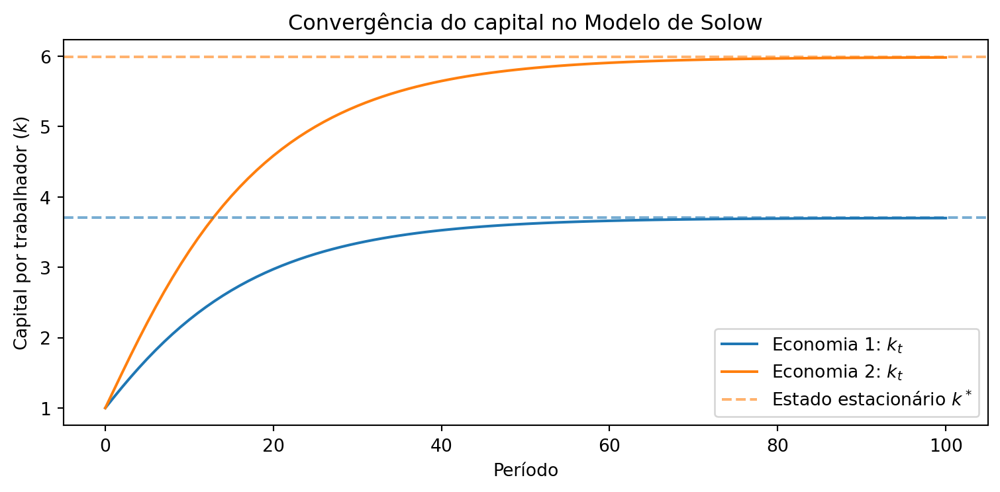

A Programação Orientada a Objetos (POO) em Python ajuda a estruturar o código agrupando dados e comportamentos relacionados em objetos. Você começa definindo classes — que funcionam como moldes — e então cria objetos a partir delas. A POO simplifica a modelagem de conceitos do mundo real e permite construir sistemas mais reutilizáveis e escaláveis.
Ao final deste capítulo, você será capaz de:
Definir classes como moldes para objetos
Instanciar classes para criar objetos com dados reais
Usar atributos e métodos para definir propriedades e comportamentos
Criar subclasses por meio de herança
Chamar métodos da classe pai com super()
Verificar a hierarquia de classes com isinstance()
8.1 O que é Programação Orientada a Objetos?
A POO é um paradigma de programação que estrutura os programas em torno de objetos — entidades que combinam dados e comportamentos relacionados.
Por exemplo, um objeto pode representar um consumidor com atributos como nome e renda, e comportamentos como consumir e poupar. Ou pode representar uma empresa com atributos como receita e custos, e comportamentos como contratar e produzir.
A POO é frequentemente descrita em torno de quatro pilares:
Pilar
Descrição
Encapsulamento
Agrupa dados e comportamentos em uma classe, controlando o acesso e protegendo a integridade dos dados
Herança
Permite criar hierarquias de classes, onde subclasses herdam atributos e métodos da classe pai
Abstração
Esconde detalhes de implementação, expondo apenas a interface essencial do objeto
Polimorfismo
Permite que objetos de classes diferentes respondam ao mesmo método de formas distintas
Ideia central: em outros paradigmas, objetos apenas representam dados. Na POO, eles também informam a estrutura geral do programa.
8.2 Por que usar classes?
Tipos primitivos — como números, strings e listas — são projetados para representar informações simples. Mas e quando precisamos representar algo mais complexo?
Por exemplo, suponha que queremos registrar contas bancárias com titular, saldo, tipo e número. Uma abordagem ingênua seria usar listas:
conta1 = ["João", 1500, "corrente", "001-5"]conta2 = ["Maria", 3200, "poupança", "002-8"]conta3 = ["Pedro", "corrente"] # saldo esquecido!# Problema 1: é preciso memorizar o que cada índice significaprint(f"Titular: {conta1[0]}") # ok — mas exige memorizar índice 0 = titularprint(f"Saldo: {conta1[1]}") # ok — mas exige memorizar índice 1 = saldo# Problema 2: listas incompletas causam erros silenciososprint(f"Saldo de Pedro: {conta3[1]}") # retorna "corrente" em vez do saldo!
Titular: João
Saldo: 1500
Saldo de Pedro: corrente
Existem dois problemas com essa abordagem:
Legibilidade ruim: conta1[0] representa o titular, mas isso só é óbvio se você lembrar a posição de cada campo.
Fragilidade: se uma lista tiver menos elementos (como conta3, sem saldo), acessar índices fixos retorna valores errados — silenciosamente.
Uma classe resolve esses problemas ao nomear explicitamente cada atributo e garantir que todo objeto tenha a mesma estrutura.
8.3 Definindo uma classe
8.3.1 Classes vs. instâncias
Uma classe é como um formulário em branco: define os campos e as regras, mas não contém dados reais. Uma instância é como um formulário preenchido — um objeto concreto, com valores próprios.
Assim como muitos clientes podem abrir uma conta no mesmo banco com informações diferentes, você pode criar muitas instâncias a partir de uma única classe.
Toda definição começa com class, o nome (em CamelCase) e dois-pontos. O corpo é indentado. O exemplo mais simples usa pass como corpo provisório:
class ContaBancaria:pass# Instanciando a classe: criando objetosa = ContaBancaria()b = ContaBancaria()print(a) # <__main__.ContaBancaria object at 0x...>print(b)print(a == b) # False — são objetos distintos na memória
<__main__.ContaBancaria object at 0x103ac5940>
<__main__.ContaBancaria object at 0x11fa00910>
False
8.3.2 O método __init__ e atributos de instância
Para que cada objeto tenha dados próprios, definimos o método especial __init__. Ele é chamado automaticamente toda vez que um novo objeto é criado.
O primeiro parâmetro é sempre self — uma referência ao próprio objeto que está sendo criado.
self.titular = titular cria um atributo de instância: um dado específico àquele objeto.
Atributos de instância podem ter valores diferentes para cada objeto.
Além dos atributos de instância, podemos definir atributos de classe — valores compartilhados por todos os objetos da classe, definidos diretamente no corpo da classe (fora do __init__).
class ContaBancaria: banco ="Banco Python"# atributo de CLASSE (compartilhado por todos)def__init__(self, titular, saldo=0): # método construtorself.titular = titular # atributo de INSTÂNCIA (específico do objeto)self.saldo = saldo # atributo de INSTÂNCIA (específico do objeto)
8.4 Instanciando uma classe
Para criar um objeto, chame o nome da classe com os argumentos necessários (self é preenchido automaticamente pelo Python). Depois, acesse atributos com a notação de ponto (.).
Objetos são mutáveis por padrão: você pode alterar um atributo após a criação.
c1 = ContaBancaria("João Silva", 1500)c2 = ContaBancaria("Maria Santos", 3200)# Atributos de instância: variam por objetoprint(c1.titular) # João Silvaprint(c1.saldo) # 1500# Atributo de classe: igual em todos os objetosprint(c1.banco) # Banco Pythonprint(c2.banco) # Banco Python# Objetos são mutáveis: atributos podem ser alterados após a criaçãoc1.saldo =2000print(c1.saldo) # 2000
João Silva
1500
Banco Python
Banco Python
2000
8.5 Métodos de instância
Métodos de instância são funções definidas dentro de uma classe que operam sobre o objeto. Como __init__, seu primeiro parâmetro é sempre self.
João Silva: depósito de R$ 500.00 | saldo: R$ 1,500.00
João Silva: saque de R$ 200.00 | saldo: R$ 1,300.00
Saldo insuficiente! Saldo atual: R$ 1,300.00
8.5.1 Métodos especiais (dunder methods)
Métodos com duplo sublinhado (__nome__) são chamados de dunder methods (double underscore). Eles permitem que os objetos se integrem naturalmente ao Python — em impressão, comparação, aritmética e muito mais.
O mais útil para visualização é __str__, chamado automaticamente por print(). Sem ele, imprimir um objeto exibe o endereço de memória:
print(c1) # <__main__.ContaBancaria object at 0x...>
Com __str__, controlamos exatamente o que é exibido:
João Silva: depósito de R$ 500.00 | saldo: R$ 1,500.00
ContaBancaria(João Silva, saldo=R$1,500.00)
8.6 Os tipos embutidos são classes
Embora não tenhamos mencionado explicitamente antes, usamos classes e objetos ao longo de todo este curso. Os tipos básicos do Python são, na verdade, classes. Cada valor que criamos é um objeto — uma instância dessas classes:
Tipo
Classe
Exemplos de métodos
Inteiro
int
abs(-5), int("42")
Texto
str
"olá".upper(), "olá".split()
Lista
list
lista.append(x), lista.sort()
Dicionário
dict
d.keys(), d.values()
Quando escrevemos lista.append(item), estamos chamando o métodoappend() de um objeto da classe list — exatamente como chamamos c1.depositar(500) acima. A função type() revela a classe de qualquer objeto:
Herança é o processo pelo qual uma classe adquire os atributos e métodos de outra. A classe original é chamada de classe pai (ou base); a nova é chamada de subclasse (ou filha).
Para criar uma subclasse, basta colocar o nome da classe pai entre parênteses:
Subclasses herdam todos os atributos e métodos da classe pai, mas podem sobrescrever métodos ou adicionar novos comportamentos.
Para reaproveitar a lógica já escrita na classe pai (e não duplicar código), usamos super() — que delega a chamada ao método da classe pai. Assim, se o comportamento mudar em ContaBancaria, as subclasses se beneficiam automaticamente.
class ContaCorrente(ContaBancaria):def__init__(self, titular, saldo=0, limite=500):super().__init__(titular, saldo) # reutiliza __init__ da classe paiself.limite = limite # atributo novodef sacar(self, valor): # sobrescreve: permite saque com limiteif valor >self.saldo +self.limite:print(f"Limite excedido! Valor disponível: R$ {self.saldo +self.limite:,.2f}")else:self.saldo -= valorprint(f"{self.titular}: saque de R$ {valor:,.2f} | saldo: R$ {self.saldo:,.2f}")def__str__(self):returnf"ContaCorrente({self.titular}, saldo=R${self.saldo:,.2f}, limite=R${self.limite:,.2f})"class ContaPoupanca(ContaBancaria): taxa_rendimento =0.005# 0,5% ao mês (atributo de classe)def render(self, meses=1): # método novo saldo_inicial =self.saldoself.saldo *= (1+self.taxa_rendimento) ** meses rendimento =self.saldo - saldo_inicialprint(f"{self.titular}: rendimento de R$ {rendimento:,.2f} em {meses} meses | saldo: R$ {self.saldo:,.2f}")def__str__(self):returnf"ContaPoupanca({self.titular}, saldo=R${self.saldo:,.2f})"joao = ContaCorrente("João", 1000)maria = ContaPoupanca("Maria", 3000)joao.depositar(200) # depositar() herdado de ContaBancariajoao.sacar(1400) # sacar() sobrescrito — usa limitejoao.sacar(1400) # limite excedidoprint()maria.depositar(500)maria.render(5) # render() próprio de ContaPoupancaprint()# isinstance() verifica a hierarquia de herançaprint(isinstance(joao, ContaCorrente)) # Trueprint(isinstance(joao, ContaBancaria)) # True — herda de ContaBancaria!print(isinstance(joao, ContaPoupanca)) # False
João: depósito de R$ 200.00 | saldo: R$ 1,200.00
João: saque de R$ 1,400.00 | saldo: R$ -200.00
Limite excedido! Valor disponível: R$ 300.00
Maria: depósito de R$ 500.00 | saldo: R$ 3,500.00
Maria: rendimento de R$ 88.38 em 5 meses | saldo: R$ 3,588.38
True
True
False
8.8 Polimorfismo
Polimorfismo significa que objetos de classes diferentes respondem ao mesmo método de formas distintas. Em Python, isso acontece naturalmente quando subclasses sobrescrevem métodos da classe pai — o Python sempre chama a versão mais específica do objeto.
ContaBancaria, ContaCorrente e ContaPoupanca todas implementam __str__(), mas cada uma retorna uma representação diferente:
contas = [ ContaBancaria("Ana Silva", 500), ContaCorrente("Bruno Lima", 800, limite=1000), ContaPoupanca("Carla Souza", 5000),]# O Python chama o __str__() correto para cada objeto automaticamentefor conta in contas:print(conta)
onde \(f(k) = k^\alpha\) é a função de produção Cobb-Douglas, \(s\) é a taxa de poupança, \(\delta\) é a taxa de depreciação e \(n\) é a taxa de crescimento populacional. O estado estacionário satisfaz \(k_{t+1} = k_t = k^*\):
Com POO, encapsulamos toda a lógica em uma classe ModeloSolow:
Os parâmetros são atributos — facilitando comparar economias com diferentes configurações.
As equações são métodos — producao(), atualizar(), estado_estacionario().
O histórico da simulação é armazenado no próprio objeto, pronto para visualização.
import matplotlib.pyplot as pltclass ModeloSolow:""" Modelo de Crescimento de Solow. Parâmetros ---------- s : taxa de poupança delta : taxa de depreciação n : taxa de crescimento populacional alpha : elasticidade do capital na produção k0 : capital inicial por trabalhador """def__init__(self, s=0.2, delta=0.1, n=0, alpha=0.3, k0=1):self.s, self.delta, self.n = s, delta, nself.alpha = alphaself.k = k0self.historia = [k0]def producao(self, k):"""Função de produção Cobb-Douglas: y = k^alpha."""return k**self.alphadef atualizar(self):"""Atualiza o capital para o próximo período.""" y =self.producao(self.k)self.k =self.s * y + (1-self.delta -self.n) *self.kself.historia.append(self.k)def simular(self, T=100):"""Simula T períodos."""for _ inrange(T):self.atualizar()def estado_estacionario(self):"""Calcula o estado estacionário teórico."""return (self.s / (self.n +self.delta))**(1/ (1-self.alpha))def__str__(self):return (f"ModeloSolow(s={self.s}, delta={self.delta}, n={self.n}, "f"alpha={self.alpha})")economia1 = ModeloSolow(s=0.25, delta=0.1, alpha=0.3)economia2 = ModeloSolow(s=0.35, delta=0.1, alpha=0.3) # taxa de poupança maioreconomia1.simular(T=100)economia2.simular(T=100)print(economia1)print(f"Capital inicial: {economia1.historia[0]:.4f}")print(f"Capital final: {economia1.k:.4f}")print(f"Estado estacionário k*: {economia1.estado_estacionario():.4f}")print()print(economia2)print(f"Capital inicial: {economia2.historia[0]:.4f}")print(f"Capital final: {economia2.k:.4f}")print(f"Estado estacionário k*: {economia2.estado_estacionario():.4f}")fig, ax = plt.subplots(figsize=(8, 4))ax.plot(economia1.historia, label="Economia 1: $k_t$")ax.plot(economia2.historia, label="Economia 2: $k_t$")ax.axhline(economia1.estado_estacionario(), color="C0", linestyle="--", alpha=0.6)ax.axhline(economia2.estado_estacionario(), color="C1", linestyle="--", alpha=0.6, label="Estado estacionário $k^*$")ax.set_title("Convergência do capital no Modelo de Solow")ax.set_xlabel("Período")ax.set_ylabel("Capital por trabalhador ($k$)")ax.legend()plt.tight_layout()plt.show()
ModeloSolow(s=0.25, delta=0.1, n=0, alpha=0.3)
Capital inicial: 1.0000
Capital final: 3.7001
Estado estacionário k*: 3.7024
ModeloSolow(s=0.35, delta=0.1, n=0, alpha=0.3)
Capital inicial: 1.0000
Capital final: 5.9830
Estado estacionário k*: 5.9874

8.10 Exercícios
Crie uma classe Pais com os atributos nome, pib_per_capita (em US$) e inflacao (em %). Adicione:
Um método __str__ que exiba as informações formatadas.
Um método taxa_real(taxa_nominal) que calcule a taxa de juros real pela Equação de Fisher.
Validação no construtor: pib_per_capita deve ser positivo e inflacao deve ser um número.
Um @classmethoddo_dicionario(cls, dados) que crie um Pais a partir de um dicionário.
Instancie pelo menos 3 países e exiba os resultados.
Crie uma classe SerieTemporalEconomica para armazenar uma série de dados (ex: IPCA mensal). A classe deve ter:
Atributos: nome (str), unidade (str, ex: "%"), valores (lista de floats).